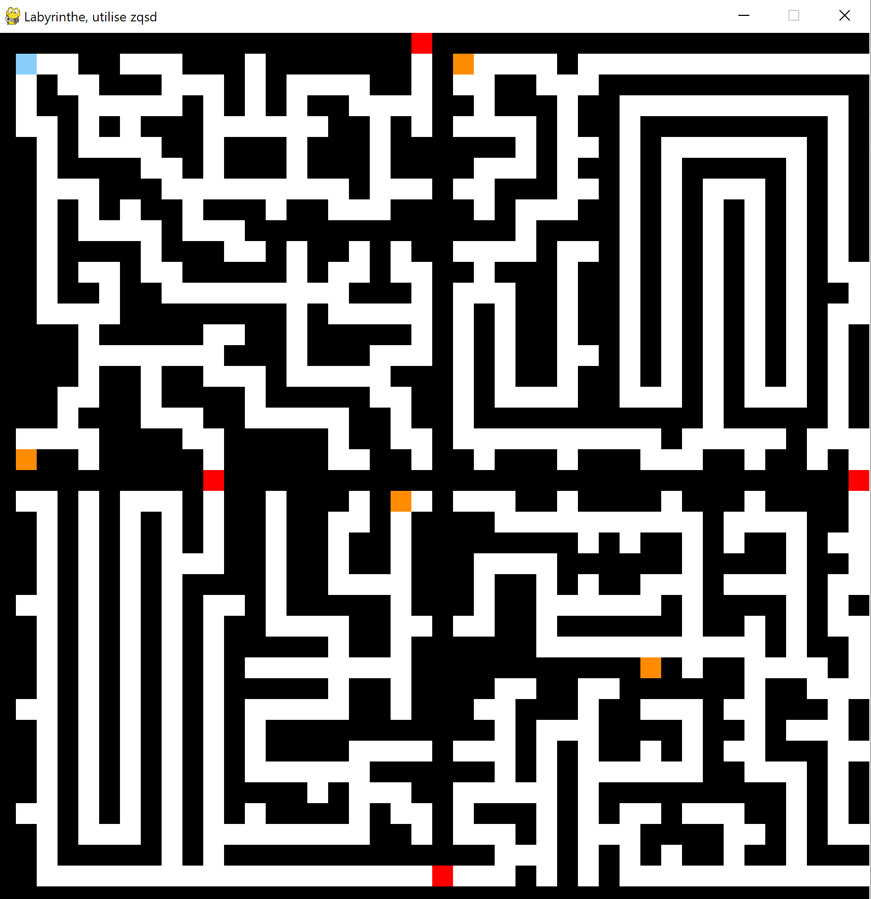
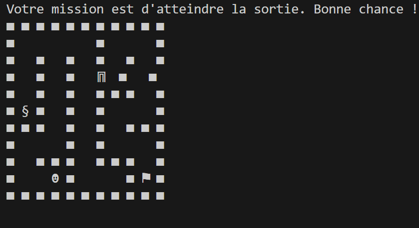
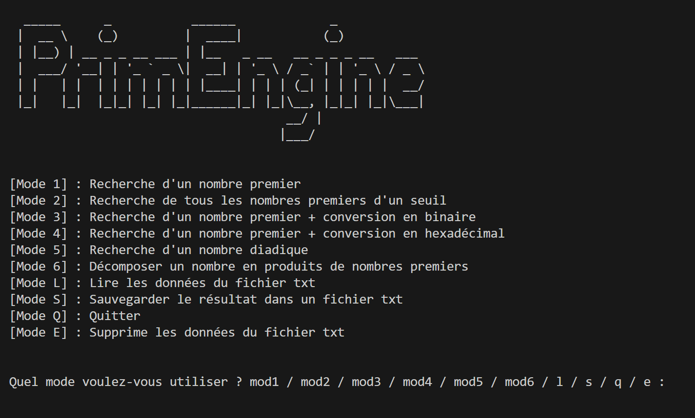
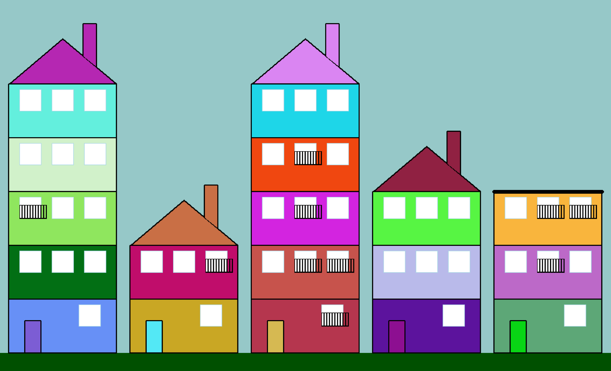
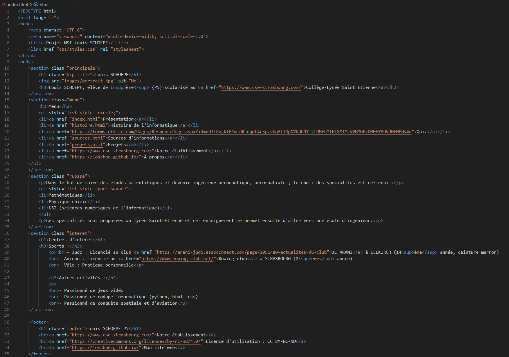

Dans ce premier projet, nous devions écrire un code Python permettant de déplacer un joueur dans un labyrinthe. Initialement, nous avons affiché le labyrinthe dans la console Python, mais le gameplay n'était pas très ergonomique. Certains élèves ont alors converti leur code en utilisant d'autres modules comme « keyboard » ou « pygame » pour rendre le jeu plus sympa et améliorer l'expérience du labyrinthe. Chacun pouvait laisser libre cours à son imagination : génération aléatoire de labyrinthes, ajout d'énigmes, présence de monstres...
 Dans ce deuxième projet, nous devions écrire un code Python permettant d'effectuer différentes tâches sous forme de fonctions, telles que la conversion en base binaire, la recherche d'un nombre premier, la décomposition d'un nombre, etc. Ensuite, les élèves devaient réaliser une interface utilisable dans la console pour accéder aux différentes fonctionnalités du programme. Ce projet a également introduit la notion de bibliothèque pour alléger le code Python et le séparer en fichiers distincts. Les élèves ont ainsi appris à organiser leur code de manière modulaire, ce qui facilite sa maintenance et son évolution.
Dans ce troisième projet, nous devions écrire un code utilisant le module "turtle" pour dessiner une ville composée de plusieurs bâtiments, avec des toits, des fenêtres, des portes, des balcons, etc. Chaque élève pouvait laisser libre cours à son imagination pour les dessins, les couleurs et les ajouts, mais certaines consignes, telles que l'utilisation de fonctions ou de bibliothèques, étaient nécessaires pour consolider les connaissances. Le code devait être correctement commenté afin d'expliquer chaque partie du processus de dessin. De plus, la notion d'« asserts » était au programme pour vérifier que le code fonctionnait comme prévu à chaque étape.
Dans ce dernier projet de l’année, les élèves ont découvert un nouvel univers : le Web. En utilisant la programmation HTML et la réalisation graphique en CSS, ils ont dû créer un site web composé d’une page de présentation, d'une page sur l’histoire de l’informatique, et de pages qu'ils ont inventées. Ce projet leur a permis de plonger dans le monde du Web en pratiquant ces langages et en développant un site web fonctionnel. En plus d'apprendre la syntaxe HTML et CSS, les élèves ont également acquis des connaissances sur la structuration des pages web, la conception graphique et l'organisation de l'information. Certains élèves ont été inspirés et ont développé leurs propres sites web personnels, qu'ils ont ensuite mis en ligne. Cela montre non seulement leur engagement dans le projet, mais aussi leur capacité à appliquer les compétences acquises pour créer quelque chose de concret et de personnel.
